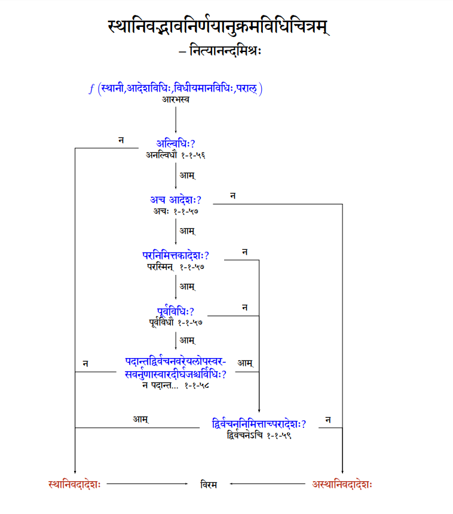

टिप्पन्यो ऽन्विष्यन्ताम् अत्र।
- सूत्रपाठः, गणपाठः, वार्त्तिकानि, उणादिसूत्राणि, परिभाषाः, वर्णः - अत्र, अत्र च।
पाणिनीयम्
अद्भुतांशाः
- यान्त्रिकी व्युत्पत्तिः पदानाम्। तदन्तर्गतयुक्तयो यथा - प्रकृति-प्रत्यय-विवेकः, प्रत्याहाराः, इत्-संज्ञा, पूर्वत्रासिद्धम्।
- अखिलाया अपि भाषायाः सूत्रेषु सङ्कोचः, तेन तस्या परिवर्तनरोधः।
- परिष्कार-परम्परा।
- लक्ष्यकेन्द्रिता।
- प्रकरणशो विभजनम्।
- नित्यप्रयोगे (तत्रापि सस्वरप्रयोगे) प्रमाणानि, विशिष्य वाचोविच्छित्तयः।
निकृष्टांशाः
- अपवादबाहुल्यय् उत्सर्गाणाम् अनुद्दर्शनम्।
- क्वचिदस्फुटप्रकरणविवेकः।
स्थानिवद्भावः
{kind=link}

अर्थबोधे मितिः
- काकं निम्बमपेक्षते That was corrected like काकः इति भवेत् But काकानां समूहः काकम्
- अम्बे मां पालय Corrected as अम्ब But the splitting in the initial usage like अम्ब इमां पालय
- दधिमानय -> दधि मा नय etc
- अश्वत्थामस्य - अश्वत्थाम्नः पुत्रस्य
आर्षप्रयोगे, कविप्रयोगे
लक्ष्यकेन्द्रिते हि लक्षणानुसन्धाने रुचिः। किञ्च स्वीयलक्षणज्ञानस्य वैकल्यात् क्वचिल् लक्षणज्ञानम् पूरणीयं वेति संशये जाते विद्वत्तरान् आश्रयामि 🙏।
यत्र तु लक्ष्यं लक्षणाद् अपेतम्, तत्र “स्थितस्य गतिश् चिन्तनीये"ति लक्षणनिपीडनापेक्षया, तयोर् व्यावर्तनस्यैवाङ्गीकारो रोचतेतराम्।
“किञ्च, येन केनाऽपि शब्देन पञ्चमीतत्पुरुषो घटितुं शक्य इति न चिन्तनीयम् ननु - “सुप् सुपेति समासः” इति वा “मयूरव्यंसकादयः च समानाधिकरणेने"ति वावलम्ब्य । ननु काशिका वदति - “अविहितलक्षणस् तत्पुरुषो मयूरव्यंसकाऽदिषु द्रष्टव्यः”। तौ मार्गौ भूरिशः कृतानां शिष्टप्रयोगाणां पाणिनीयत्वं दर्शयितुं भवन्ति। न पुनः सामान्यानां प्रयोगाणाम्। तत्राऽपि “केचन सन्ति शिष्टप्रयोगा ये पाणिनीयलक्षणैर् न गृह्यन्ते। किं वा लक्षणं सम्पूर्णं दोषरहितं वा भवितुम् अर्हति? ते भूरिशः कृताः शिष्टप्रयोगाः साधव इत्य् अङ्गीकार्याः” इति विनीत-वचनम् “न न, अपाणिनीयमपि पाणिनीयी करवाम सुप्सुपेत्य् उक्वे"ति धार्ष्ट्याद् उत्तरं मन्ये।”
- आर्षप्रयोगे, कविप्रयोगे, तदनुकरणानधिकारे च अत्र।